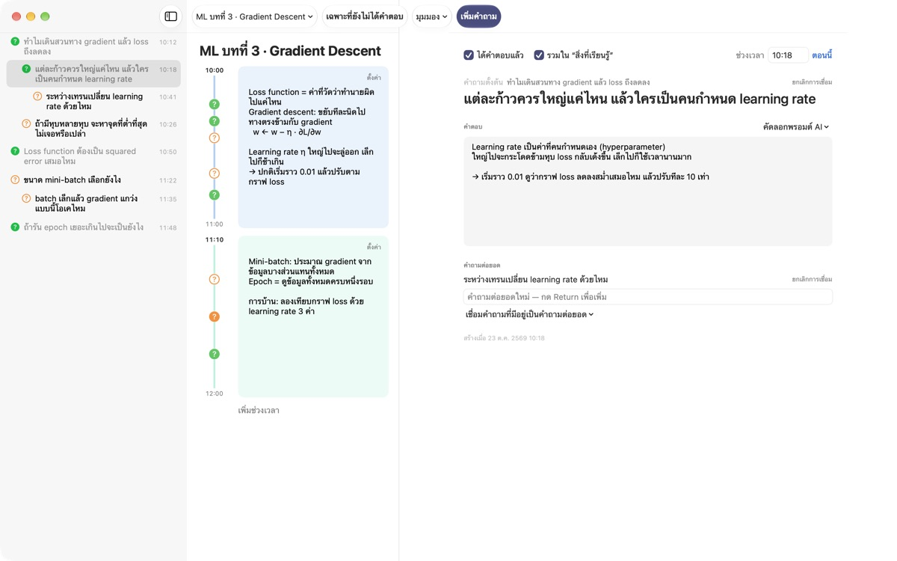
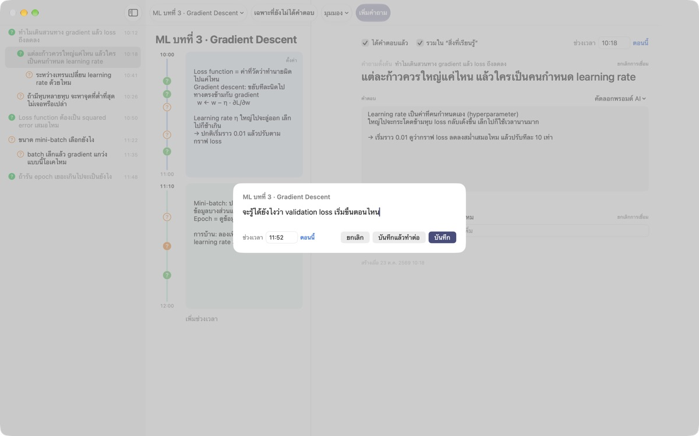
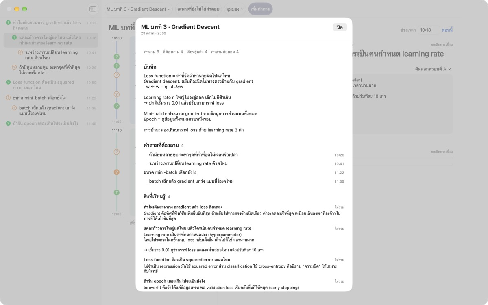
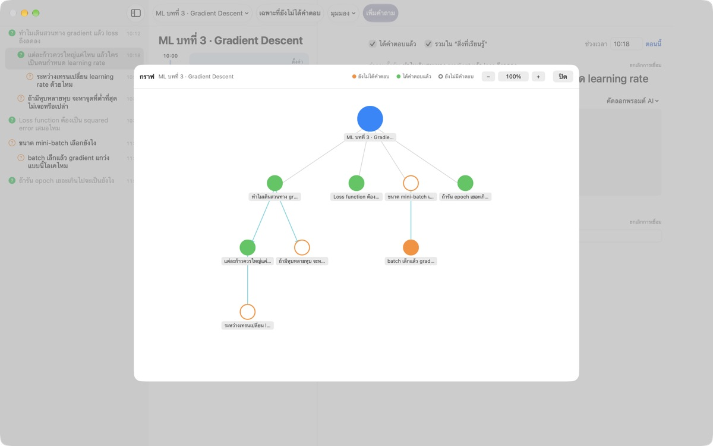

อย่าปล่อยให้ข้อสงสัย
ในคลาสหลุดหายไป
กด ⌘⇧N พิมพ์บรรทัดเดียว คำถามจะไปอยู่ข้างบันทึกของนาทีนั้นทันที คุณฟังต่อได้เลย แล้วค่อยหาคำตอบทีหลัง
สำหรับ macOS 14 ขึ้นไป ไม่ต้องมีบัญชี ข้อมูลทั้งหมดอยู่ใน Mac เครื่องนี้

ลองใช้ตรงนี้
คุณกำลังเรียนวิชาแมชชีนเลิร์นนิงอยู่ พิมพ์คำถามแล้วบันทึก จะมี ? ขึ้นข้างช่วงเวลาของเวลานั้น ถ้าเปลี่ยนเวลาไปอยู่นอกช่วงเวลาที่มี ก็จะมีช่วงเวลาใหม่สร้างขึ้นมารองรับ
เลิกคลาสแล้ว ยังจำคำถามนั้นได้อยู่ไหม
พอคิดได้ว่า "เอ๊ะ ทำไมล่ะ" อาจารย์ก็ไปเรื่องถัดไปแล้ว เครื่องหมายคำถามที่ขีดไว้ข้างสมุดจำไม่ได้ว่ามาจากคำอธิบายตอนไหน สุดท้ายก็ไม่เคยได้คำตอบ LectureQ ปักคำถามแต่ละข้อไว้กับบันทึกของช่วงเวลานั้น และวางไว้ตรงหน้าจนกว่าคุณจะเข้าใจ
ถามได้โดยไม่พลาดประโยคถัดไป
เปิดหน้าต่างพิมพ์ด้วย เพิ่มคำถาม ในแถบเครื่องมือหรือกด ⌘⇧N เวลาจะเติมให้เอง กด Return เพื่อบันทึก หรือ ⌘Return เพื่อบันทึกแล้วพิมพ์ข้อต่อไปทันที
แต่ละคำถามจะแสดงเป็น ? ข้างช่วงเวลาของมัน ภายหลังจึงเห็นได้ทันทีว่ามาจากช่วงไหนของคลาส

คำถามที่ได้คำตอบกลายเป็นสิ่งที่เรียนรู้
เขียนคำตอบด้วยคำของตัวเองแล้วทำเครื่องหมายว่าได้คำตอบแล้ว คำถามจะไปรวมอยู่ใน "สิ่งที่เรียนรู้" ในหน้าสรุป ส่วนที่ยังค้างอยู่จะอยู่ใน "คำถามที่ต้องถาม" รายการสำหรับคลาสหน้าจึงเกิดขึ้นเองคัดลอกพรอมต์ AI ในรายละเอียดคำถามจะคัดลอกพรอมต์ที่ใส่ชื่อบทเรียนและบันทึกของช่วงเวลานั้นไว้แล้วลงคลิปบอร์ด แค่วางในบริการ AI ที่ใช้อยู่

เห็นว่าความคิดแตกแขนงไปทางไหน
คำถามต่อยอดจะเรียงย่อหน้าอยู่ใต้คำถามที่เป็นต้นทาง และในกราฟจะเชื่อมกันด้วยลูกศร คลิกที่จุดเพื่อไปยังคำถามนั้นได้ทันที
ในสถานะการเรียนรู้ คุณจดได้ว่าตอนนี้อยู่ตรงไหน อยากไปถึงไหนเมื่อจบคอร์ส และอยากเรียนรู้อะไร แล้วเทียบกันดู

เริ่มได้ใน 3 ขั้นตอน
- 1
สร้างบทเรียน
เพิ่มจากเมนูบทเรียนทางซ้ายของแถบเครื่องมือ หรือนำเข้าบทสนทนาที่บันทึกเป็น Markdown
- 2
นึกได้ก็จดเลย
กด
⌘⇧Nบรรทัดเดียวก็พอ เวลาเติมไว้ให้แล้ว - 3
ค่อยตอบทีหลัง
เขียนคำตอบแล้วคลิก ? เพื่อทำเครื่องหมายว่าได้คำตอบแล้ว คำถามจะย้ายไปที่ "สิ่งที่เรียนรู้"
คีย์ลัด
- ⌘⇧N
- เพิ่มคำถาม
- Return
- บันทึก
- ⌘Return
- บันทึกแล้วพิมพ์ข้อต่อไป
- Esc
- ยกเลิก
- ⌘1
- สรุป: คำถามที่ต้องถาม สิ่งที่เรียนรู้ บันทึก
- ⌘2
- กราฟ: คำถามตั้งต้นกับคำถามต่อยอด
- ⌘3
- ช่วงเวลา: ช่วงเวลาของทุกบทเรียนเรียงตามเวลา
- ⌘4
- สถานะการเรียนรู้
- ⌘+ · ⌘- · ⌘0
- ตัวอักษรใหญ่ขึ้น เล็กลง ขนาดปกติ
ทั้งหมดอยู่ในเมนู "มุมมอง" ด้วย
ใช้ได้ทุกฟีเจอร์ฟรี
ฟรี
- จดคำถามด่วนและบันทึกตามช่วงเวลา
- คำถามต่อยอดและกราฟ
- สรุป ภาพรวมช่วงเวลา และสถานะการเรียนรู้
- พรอมต์ AI 5 ขั้น คัดลอกลงคลิปบอร์ด
- นำเข้าบทสนทนาจาก Markdown
สนับสนุนผู้พัฒนา
- ถ้าแอปช่วยคุณได้ ส่งทิปเล็กๆ ได้จากการตั้งค่า
- การส่งทิปไม่ได้ปลดล็อกอะไรเพิ่ม
จะส่งทิปหรือไม่ ทุกอย่างก็ใช้ได้เหมือนเดิม
ไม่มีโฆษณา ไม่ต้องมีบัญชี บันทึกของคุณอยู่ใน Mac เครื่องนี้
คำถามที่พบบ่อย
สีของ ? ข้างคำถามหมายถึงอะไร
ในรายการ วงกลมสีส้มโปร่งคือคำถามที่ยังไม่ได้คำตอบ วงกลมสีเขียวทึบคือได้คำตอบแล้ว คลิก ? เพื่อสลับสถานะ และเปิด เฉพาะที่ยังไม่ได้คำตอบ ในแถบเครื่องมือเพื่อดูเฉพาะข้อที่ค้างอยู่ ส่วน ? ข้างช่วงเวลา สีบอกว่าได้คำตอบหรือยัง และวงกลมทึบแปลว่าเขียนคำตอบไว้แล้ว
ช่วงเวลาเกิดขึ้นได้อย่างไร
กด เพิ่มช่วงเวลา ช่วงเวลาใหม่จะเริ่มตอนนั้น และช่วงก่อนหน้าจะจบลงตรงนั้น ถ้าจดคำถามในเวลาที่ไม่มีช่วงเวลาไหนครอบคลุม ระบบจะสร้างช่วงเวลาที่ครอบเวลานั้นให้เอง ใช้ ตั้งค่า มุมขวาบนของช่วงเวลาเพื่อเปลี่ยนสี เวลาเริ่ม ความยาว หรือลบทิ้ง ถ้าคุณลบช่วงเวลาเอง บทเรียนนั้นจะไม่สร้างช่วงเวลาอัตโนมัติอีก
"ได้คำตอบแล้ว" ต่างจาก "สิ่งที่เรียนรู้" อย่างไร
เมื่อติ๊ก ได้คำตอบแล้ว ในรายละเอียดคำถาม คุณเลือกได้ด้วยว่าจะรวมไว้ใน "สิ่งที่เรียนรู้" หรือไม่ ที่นั่นจะมีเฉพาะคำถามที่ได้คำตอบและเลือกให้รวมไว้ จะนำออกหรือใส่กลับจากหน้าสรุปก็ได้ คำตอบยังอยู่ครบ
ใช้ AI หาคำตอบอย่างไร
ในรายละเอียดคำถาม เปิด คัดลอกพรอมต์ AI ข้างช่อง "คำตอบ" แล้วเลือกขั้น: ขัดเกลาคำถาม หาคำตอบ ถามย้อนคำตอบ สกัดคำถามต่อยอด หรือให้ AI ตรวจคำตอบของฉัน พรอมต์ที่ใส่ชื่อบทเรียน บันทึกของช่วงนั้น สถานะการเรียนรู้ และคำถามตั้งต้นจะถูกคัดลอกลงคลิปบอร์ด ตอนนี้เนื้อหาพรอมต์ยังเป็นภาษาเกาหลี แต่ AI ส่วนใหญ่เข้าใจได้ และคุณขอให้ตอบเป็นภาษาไทยได้ ขั้นตรวจคำตอบต้องเขียนคำตอบของตัวเองไว้ก่อน แอปไม่ได้เชื่อมต่อกับบริการ AI เอง
นำเข้าบทสนทนาที่บันทึกเป็น Markdown ได้ไหม
เลือก นำเข้าจาก Markdown… ในเมนูบทเรียน แล้วเลือกไฟล์ จะได้บทเรียนใหม่ # หัวเรื่อง จะเป็นชื่อบทเรียน ในแต่ละ ## หัวข้อ คำถามแรกคือคำถามตั้งต้น ข้อถัดไปคือคำถามต่อยอด คำพูดของผู้พูดคนแรกในไฟล์จะกลายเป็นคำถาม ส่วนของคนอื่นเป็นคำตอบของคำถามก่อนหน้า ไฟล์ต้นฉบับจะไม่ถูกแก้ไข
ลบคำถามหรือบทเรียนอย่างไร
คลิกขวาที่คำถามในรายการแล้วเลือก ลบ ส่วนบทเรียนใช้ ลบบทเรียนนี้ ในเมนูบทเรียน คำถามและช่วงเวลาของบทเรียนนั้นจะถูกลบไปด้วยและกู้คืนไม่ได้ ควรสำรองข้อมูลสำคัญไว้ก่อน
ข้อมูลเก็บไว้ที่ไหน สำรองอย่างไร
ทุกอย่างอยู่ใน Mac เครื่องนี้และไม่ถูกส่งออกไป ถ้าจะสำรอง ให้ปิดแอปแล้วคัดลอกทั้งโฟลเดอร์ ~/Library/Containers/com.lectureq.LectureQ/Data/Library/Application Support/LectureQ/ รวมไฟล์ -wal และ -shm แอปส่งเฉพาะสถิติการใช้งานแบบไม่ระบุตัวตน เช่น เวอร์ชันและวันที่เปิดใช้ ไม่เคยส่งสิ่งที่คุณเขียน
ตัวอักษรเล็กเกินไป
⌘+ ขยาย ⌘- ย่อ และ ⌘0 กลับเป็นขนาดปกติ ปรับได้ตั้งแต่ 85% ถึง 200% และจำค่าที่ตั้งไว้
ใช้กับ Mac รุ่นไหนได้บ้าง
Mac ทุกเครื่องที่ใช้ macOS 14 ขึ้นไป ซอร์สโค้ดเปิดเผยบน GitHub ที่ M1zz/LectureQ
มีบางอย่างใช้ไม่ได้ ต้องแจ้งที่ไหน
ส่งความคิดเห็นได้จากการตั้งค่าของแอป (⌘,) หรือส่งอีเมลมาที่อยู่ด้านล่าง บอกเวอร์ชัน macOS และสิ่งที่กำลังทำตอนเกิดปัญหา จะช่วยให้เราตรวจสอบได้เร็วขึ้น
มีคำถามหรือข้อเสนอแนะ เขียนมาที่ mizzking75@gmail.com